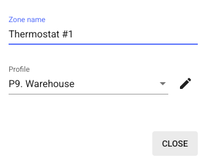
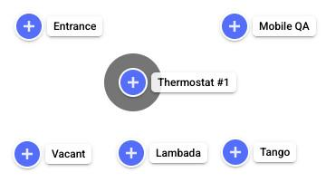
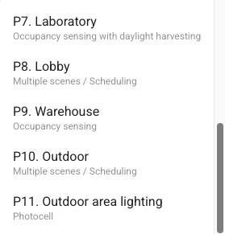
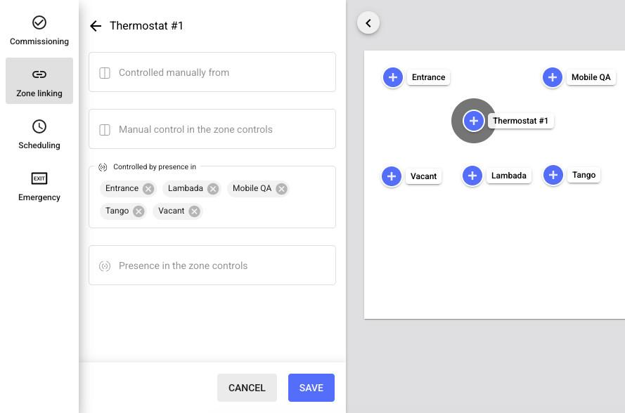

Legal Notice & Disclaimer
The information provided in this document is provided “AS-IS.” mwConnect specifically disclaims any and all express, implied, or statutory warranties, including the implied warranties of fitness for a particular purpose and of merchantability. No person is authorized to make any warranty or representation on behalf of mwConnect concerning the performance of the described products or information.
The user of this document assumes all responsibility and liability for proper and safe handling of the equipment described herein. Further, the user indemnifies mwConnect from all claims arising from the handling or use of the goods and services. It is the user’s responsibility to take all appropriate precautions with regard to electrostatic discharge and any other technical or safety concerns. Personnel installing or operating this equipment must have appropriate electronics or HVAC training and observe good engineering practice.
Except as expressly indicated in writing, mwConnect products and services are not designed for use in medical, life-saving, or life-sustaining applications, or for any other application in which failure of the product could result in personal injury or death. The information in this document may not be used contrary to applicable law or for any purpose other than the building automation and lighting control solution described herein.
To the maximum extent permitted by applicable law, mwConnect shall not be responsible or liable for any direct, indirect, special, incidental, punitive, or consequential damages, including but not limited to loss of revenues, loss of profits, or loss or inaccuracy of data, even if advised of the possibility of such damages. mwConnect’s cumulative liability for any and all damages is limited to the amounts paid to mwConnect by the user in the last 12 months for the particular products and/or services with respect to which a claim is made.
The parameters provided in this document may vary over time. All operating parameters must be validated by each customer’s technical experts. Except as expressly indicated in writing, no license, express or implied, to any intellectual property rights is granted by this document. mwConnect reserves the right to make changes to the information in this document or to any products and services at any time without notice.
Product names and markings noted herein may be trademarks of their respective owners. Bluetooth® is a registered trademark of Bluetooth SIG, Inc. TruBlu™ and mwLink™ are trademarks of mwConnect.
1. Introduction
The Bluetooth® NLC HVAC Integration profile enables HVAC systems to use real-time occupancy and environmental data from lighting networks.
This application note explains how to integrate a thermostat with TruBlu™ Bluetooth mesh networks so HVAC equipment can respond to occupancy data from the lighting network — no extra sensors required. It outlines the architecture, configuration steps, and design considerations for thermostat OEMs, system integrators, and facility managers.
2. Overview
The core of HVAC integration with TruBlu™ lighting networks is the thermostat, which connects Bluetooth NLC lighting networks with HVAC systems. It allows HVAC systems to respond to real-time occupancy data from motion or occupancy sensors already installed in the lighting network.
2.1 Data Processing and Control
The thermostat collects occupancy data from sensors in the Bluetooth mesh network and processes it to make control decisions. It interprets multiple occupancy data types, including presence detection, motion sensing, and people counting.
2.2 Supported Hardware
The following TruBlu™ Bluetooth NLC thermostats are supported:
- TruBlu™ X7 — Wi-Fi thermostat
- TruBlu™ X7 — Wi-Fi thermostat with CO₂ sensor
- TruBlu™ X7C — Ethernet thermostat with CO₂ sensor
2.3 Communication Model
The thermostat uses the Bluetooth Mesh Sensor Client model. It subscribes to sensor status messages published in the mesh and aggregates data from multiple sensors to drive HVAC control. This approach ensures reliable access to real-time environmental data.
3. Commissioning Thermostats
3.1 Creating Thermostat Zones
- Define lighting zones based on your project requirements. Make sure each zone from which you want to control HVAC contains at least one motion or occupancy sensor (occupancy zones).
Note: All zones that will control HVAC must use a profile based on: Occupancy sensing, Occupancy sensing with daylight harvesting, Vacancy sensing, or Vacancy sensing with daylight harvesting.
- In the TruBlu™ web app, open the project and area.
- Click on the floor or site plan to create a zone containing only a thermostat (thermostat zone).
- Enter a name for the zone.
- From the Profile list, select a control profile based on the Occupancy sensing scenario.



- Click Close.
- Repeat steps 3–6 for other thermostat zones in this area.
- Go to the other areas with thermostat zones and repeat steps 3–7.
3.2 Linking Thermostat Zones with Occupancy Zones
- In the TruBlu™ web app, open the project and then an area.
- Click Zone linking.
- Select a thermostat zone.
- In Controlled by presence in, add the occupancy zones that will activate the HVAC.
- Click Save.
- Repeat steps 2–5 for the other thermostat zones in this area and link each of them with its corresponding occupancy zones.
- Go to the other areas that contain thermostat zones and repeat steps 2–6.

3.3 Adding Thermostats to the Zones
- Go on site to a thermostat zone.
- In the TruBlu™ mobile app, open the project, area, and zone.
- Add the thermostat to the zone.
- Repeat steps 1–3 for all thermostat zones.
3.4 Configuring Occupancy Timers on Thermostat
- Access the Installer Menu: press and hold the Menu button (three-line icon, lower-left) for about 5 seconds.
Expected screen: The display changes to Installer followed by a version number.
- Navigate using the arrow next to the checkmark until Occupancy Input is shown.
- Set Occupancy Input to Occupancy Module using the +/− buttons, then tap the checkmark.
- In the Occupancy sub-menu, configure the timer parameters listed below.
Parameter Menu Name Action OPTT Verify Occ Delay Set the initial “soak” delay for the first motion event. OMRT Min Occ Time Set the minimum guaranteed occupied duration. OATT Unocc Delay Set the countdown period after motion stops before declaring unoccupied. - After setting Unocc Delay, continue to Exit Menu.
- Tap the checkmark to save changes and return to the main thermostat screen.
4. Document Revisions
| Revision | Date | Editor | Changes |
|---|---|---|---|
| 1.0 | 4 December 2025 | GM | Initial revision. Adapted from Silvair SN-232 rev. 1.0 for mwConnect / TruBlu™ branding. |
Contact Information
| Technical Support | support@mwconnect.us |
| Business Development | sales@mwconnect.us |
| Website | www.mwconnect.us |